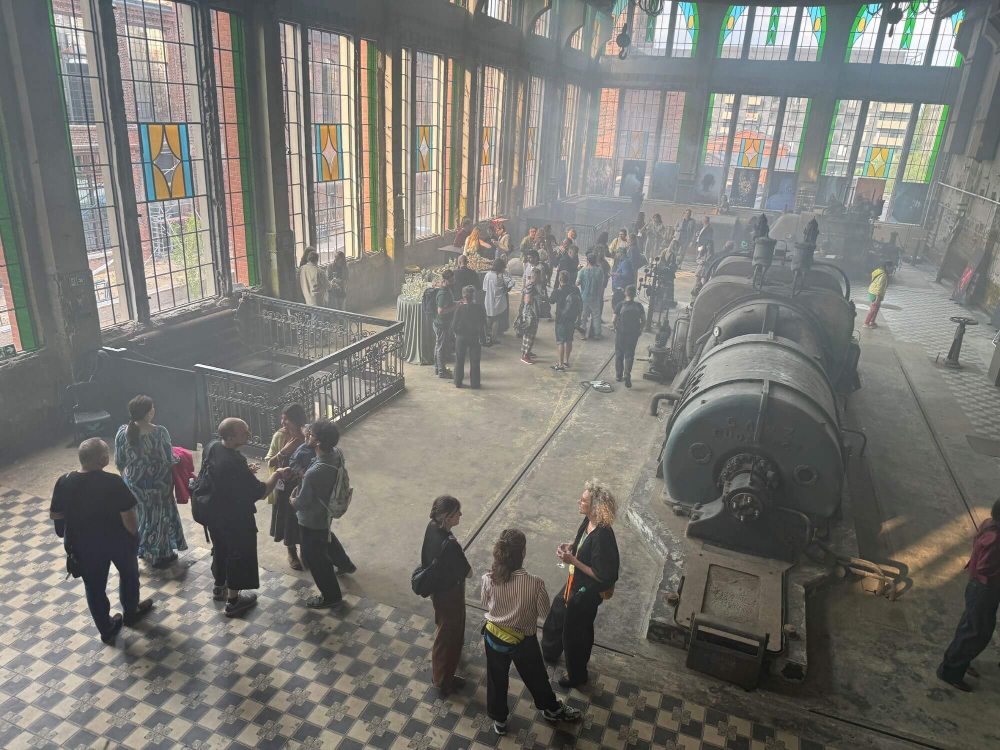
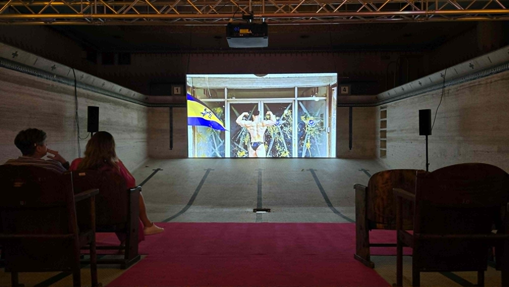
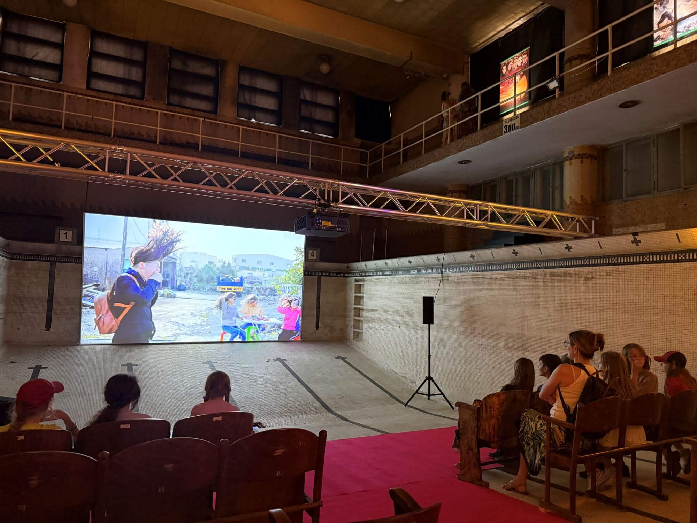

臺灣影像首度參與波蘭羅茲國際攝影節，在歷史泳池與宮殿之間展現多元文化

2026 年 6 月 18 日至 28 日，米豆藝術空間攜手臺灣藝術家與攝影出版品計畫，首度以臺灣主題展區登上波蘭羅茲國際攝影節（Fotofestiwal）。適逢攝影節 25 週年，策展人陳念庭透過藝術影像展《Kino UTOPIA 奇影烏托邦》與攝影書展《島嶼複眼：台灣的多重影像》（Island Compound Eyes: Multiple Images of Taiwan），將臺灣的歷史記憶、身體行動、土地經驗與身份敘事帶進羅茲，與波蘭觀眾展開一場關於觀看、記憶與文化理解的對話。

波蘭羅茲國際攝影節臺灣展場《奇影烏托邦》放映姚瑞中作品《犬儒共和國1979》。圖 / 米豆藝術空間提供
Fotofestiwal 創立於 2001 年，是波蘭最具代表性的國際攝影節之一。羅茲是一座影像文化深厚的城市。19 世紀的紡織業曾使它成為波蘭重要工業重鎮，龐大的廠房與工業建築遺跡，如今轉化為文化與創意空間；1948 年創立的羅茲電影學院，則孕育了波蘭斯基、基斯洛夫斯基等重要電影工作者，使這座城市在歐洲影像文化中占有特殊位置。
臺灣影像今年在這座被工業史與電影史共同塑造的城市裡展開：一邊進入 YMCA 歷史游泳池改造而成的放映空間，一邊攤開於阿爾弗雷德・比德曼宮（Alfred Biedermann Palace）的迴廊與展廳，讓觀眾透過觀看、翻閱、聆聽、手作與味覺，走近一座島嶼的多重面貌。
